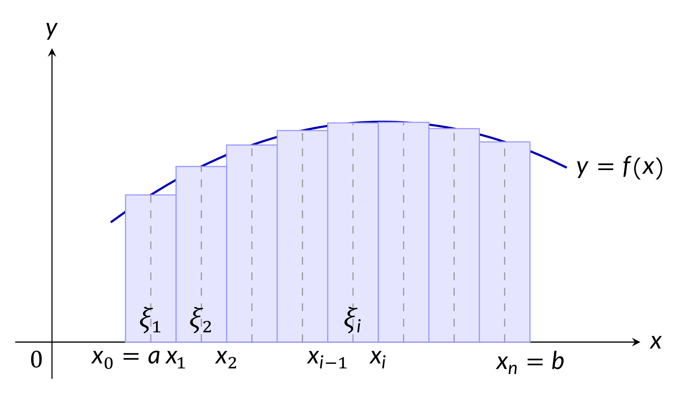
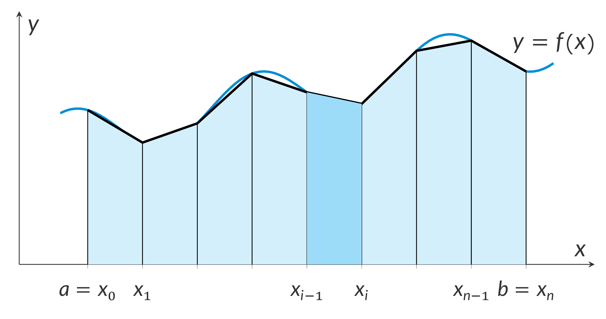

Definite integral of a function: $\displaystyle\int_a ^b f(x)dx,\,\int_a ^b g(x)dx,\,...$
Riemann sum: $\displaystyle\sum_{i=1}^n f\Big( \xi\Big)\Delta x_i$
Small changes: $Delta x_i$
Antiderivatives: $F(x),\, G(x)$
Limits of integrations: $a,b,c,d$
- $\displaystyle\int _a^b f(x)dx = \lim_{\begin{gathered} n\to \infty \\ \operatorname{max} \Delta x_i\to 0\end{gathered} }\sum_{i=1}^n f\big(\xi_i\big)\Delta x_i,$
where $\Delta x_i = x_i - x_{i-1},\, x_{i-1}\le \xi_i\le x_i$.

- $\displaystyle\int_{a}^{b} 1dx = b - a$
- $\displaystyle\int_{a}^{b} kf(x)dx = k\int_{a}^{b} f(x)dx$
- $\displaystyle\int_{a}^{b} [f(x) + g(x)]dx = \int_{a}^{b} f(x)dx + \int_{a}^{b} g(x)dx$
- $\displaystyle\int_{a}^{b} [f(x) - g(x)]dx = \int_{a}^{b} f(x)dx - \int_{a}^{b} g(x)dx$
- $\displaystyle\int_{a}^{a} f(x)dx = 0$
- $\displaystyle\int_{a}^{b} f(x)dx = -\int_{b}^{a} f(x)dx$
- $\displaystyle\int_{a}^{b} f(x)dx = \int_{a}^{c} f(x)dx + \int_{c}^{b} f(x)dx \text{ for } a \lt c \lt b$
- $\displaystyle\int_{a}^{b} f(x)dx \ge 0 \text{ if } f(x) \ge 0 \text{ on } [a, b]$
- $\displaystyle\int_{a}^{b} f(x)dx \le 0 \text{ if } f(x) \le 0 \text{ on } [a, b]$
- Fundamental Theorem of Calculus:
$$\displaystyle\int_{a}^{b}f(x)dx=F(x)|_{a}^{b}=F(b)-F(a)$ if $F^{\prime}(x)=f(x)$$
- Method of Substitution: If $x=g(t)$, then
$$\displaystyle\int_{a}^{b}f(x)dx=\int_{c}^{d}f(g(t))g^{\prime}(t)dt$$
where $c=g^{-1}(a)$ and $d=g^{-1}(b)$
- Integration by Parts:
$$\displaystyle\int_{a}^{b}udv=(uv)_{a}^{b}-\int_{a}^{b}vdu$$
- Trapezoidal Rule:
$$\displaystyle\int_{a}^{b}f(x)dx=\frac{b-a}{2n}\left[f(x_{0})+f(x_{n})+2\sum_{i=1}^{n-1}f(x_{i})\right]$$
